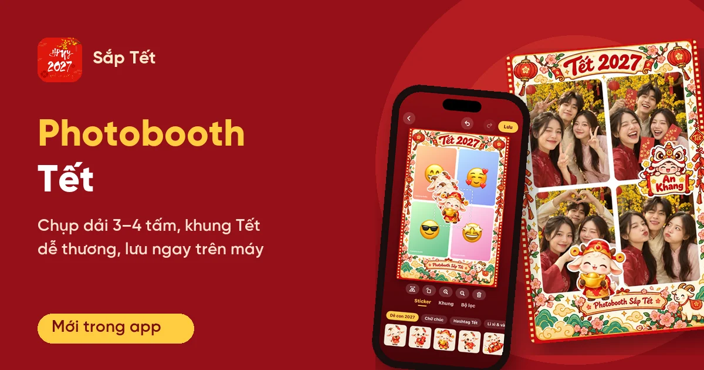
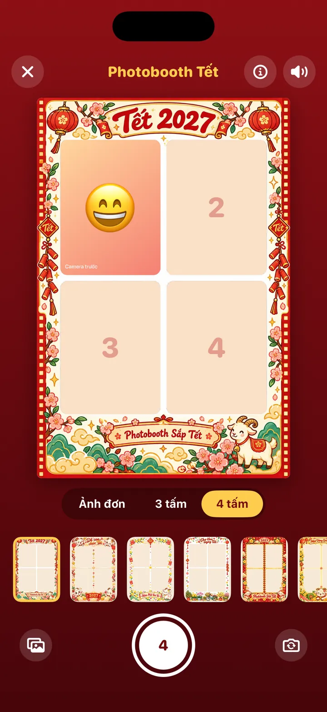
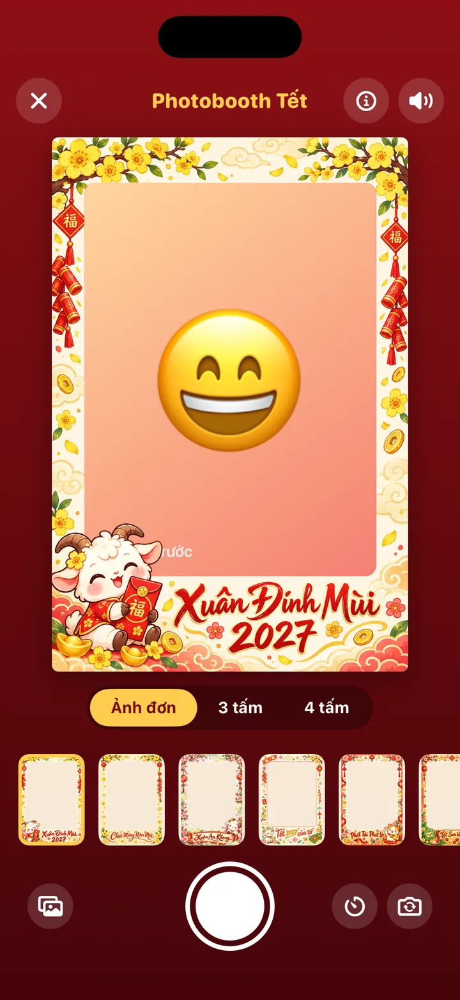
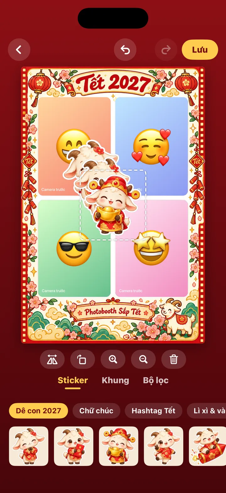
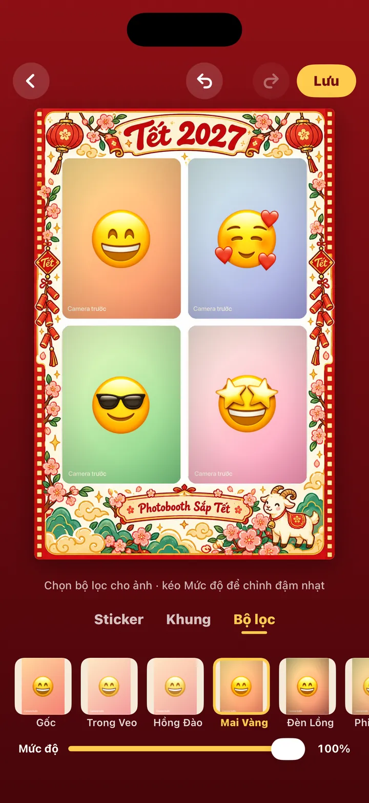

Photobooth Tết trong app Sắp Tết: chụp dải 3–4 tấm, khung Tết dễ thương

Mấy năm gần đây, chụp photobooth thành "món" không thể thiếu mỗi dịp lễ: đứng trước máy, đếm 3-2-1, nhận về một dải ảnh có khung xinh. Photobooth Tết trong app Sắp Tết đưa trải nghiệm đó vào điện thoại: chụp ảnh đơn hoặc dải 3–4 tấm, chọn khung Tết dê con 2027, dán sticker, chỉnh màu rồi lưu ngay về máy.
Chụp như máy photobooth
Photobooth Tết có ba chế độ: Ảnh đơn, 3 tấm và 4 tấm. Ảnh 3 tấm là một dải dọc như ảnh in từ máy photobooth. Ảnh 4 tấm có hai kiểu: lưới 2×2 và hai dải phim đứng cạnh nhau.
Ở chế độ 3 hoặc 4 tấm, bạn chỉ cần bấm nút chụp một lần. App đếm 3-2-1 ngay trên ô sắp chụp, chụp xong ô đó thì chuyển sang ô tiếp theo, mỗi tấm có tiếng tách máy ảnh và tiếng mõ đếm nhịp. Nhạc nền Tết tắt dần trong lúc chụp để bạn nghe rõ nhịp đếm, chụp xong lại vang lên. Tấm nào chưa ưng thì bấm nút ↻ trên ô đó để chụp lại riêng tấm ấy.
Ảnh đơn có hẹn giờ 3 hoặc 10 giây để kịp đặt máy và tạo dáng. Camera trước mở sẵn, có nút đổi sang camera sau. Muốn dùng ảnh có sẵn thì chọn từ thư viện; nếu bạn không cấp quyền camera, tính năng vẫn dùng được bằng ảnh trong thư viện.


Khung Tết, sticker và bộ lọc
Hiện có 29 khung: 12 khung ảnh đơn, 6 dải 3 tấm và 11 khung 4 tấm, vẽ theo phong cách chibi đỏ, vàng, hồng đào cùng chú dê con của năm Đinh Mùi 2027. Bạn thấy khung ngay trên camera khi chụp, và sau khi chụp vẫn đổi được sang khung khác cùng số tấm.
Ở màn hình trang trí có 70 sticker chia thành 7 gói: Dê con 2027, Chữ chúc, Hashtag Tết, Lì xì & vàng, Hoa Tết, Món Tết và Phụ kiện. Sticker kéo để di chuyển, dùng hai ngón để phóng to và xoay, chạm hai lần để lật; thanh công cụ có sẵn Lật, Xoay, To hơn, Nhỏ lại, Xoá.
Mục Bộ lọc có 8 tông màu áp cho mọi tấm, kèm thanh "Mức độ" để chỉnh đậm nhạt: Gốc, Trong Veo, Mai Vàng, Đen Trắng (miễn phí) và Hồng Đào, Đèn Lồng, Phim Ấm, Phim Xanh (VIP). Bộ lọc chỉ đổi màu ảnh, không làm đổi màu khung hay sticker.


Chỉnh từng tấm, hoàn tác, lưu và chia sẻ
Mọi thao tác trang trí đều có Hoàn tác và Làm lại ở góc trên, nên bạn cứ thử thoải mái. Trên bản Android mới nhất, chạm vào một tấm sẽ mở Chỉnh ảnh: phóng to tới 4 lần, kéo để căn lại khuôn mặt trong ô, chụp lại riêng tấm đó hoặc thay bằng ảnh trong thư viện. Phần này miễn phí cho mọi người.
Bấm Lưu để lưu ảnh vào máy hoặc Chia sẻ qua bảng chia sẻ của điện thoại (Zalo, Messenger, Instagram…), rồi "Chụp tấm mới" để chụp lượt khác.
Ảnh của bạn ở lại trên máy
Ảnh chụp, ảnh chọn từ thư viện và ảnh đã trang trí đều chỉ nằm trên điện thoại của bạn; app không tải ảnh lên máy chủ nào. Nút ⓘ trên màn hình chụp nhắc lại điều này. Ngoài ra, không có quảng cáo nào chen ngang lúc bạn đang chụp: màn hình camera không có banner, và quảng cáo toàn màn hình không bao giờ hiện trong lúc đếm hay chụp.
Miễn phí, "(QC)" và VIP
- Miễn phí: chụp mọi chế độ, các khung và sticker miễn phí, 4 bộ lọc Gốc, Trong Veo, Mai Vàng, Đen Trắng, Hoàn tác/Làm lại, lưu và chia sẻ. Ảnh lưu có một logo nhỏ "saptet.vn" ở góc.
- Nút "(QC)": xem một quảng cáo để dùng một khung, một gói sticker hoặc một bộ lọc VIP cho ảnh đang làm, hoặc để lưu ảnh không logo.
- VIP: mở toàn bộ khung, sticker và bộ lọc, lưu ảnh không logo ở chất lượng HD (cạnh ngắn 2160 px, gấp đôi bản thường 1080 px) và không có quảng cáo.
Khung VIP vẫn được chọn và xem thử trực tiếp trên camera; app chỉ hỏi mở khoá khi bạn bấm chụp hoặc lưu.
Mở Photobooth Tết ở đâu?
Trong app Sắp Tết, mở mục Khám phá → Photobooth. Tính năng có trên cả Android và iOS:
- Trang ứng dụng Sắp Tết, có nút tải đúng cho điện thoại của bạn
- Google Play (Android)
- App Store (iOS)
Tóm lại
Photobooth Tết gom cả quy trình chụp photobooth vào một màn hình: chọn số tấm, bấm một lần cho app đếm và chụp, rồi trang trí bằng khung, sticker và bộ lọc Tết. Ảnh nằm trên máy của bạn, lưu hay chia sẻ đều chỉ một chạm, nên dịp họp mặt cuối năm hay sum vầy ngày Tết là lúc dùng hợp nhất.